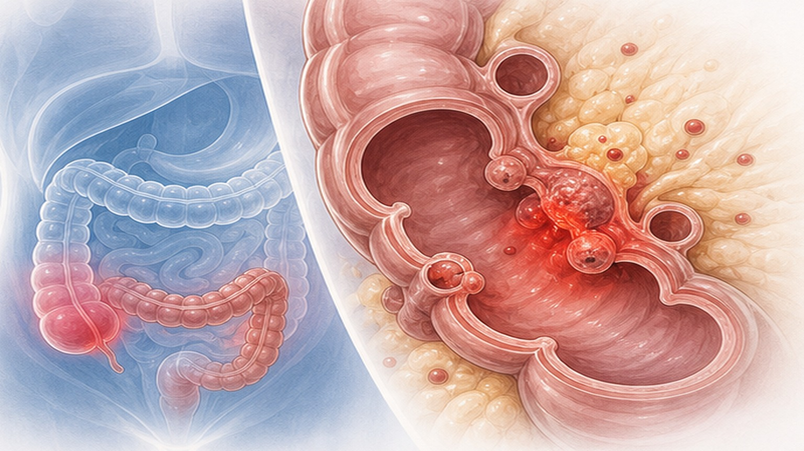
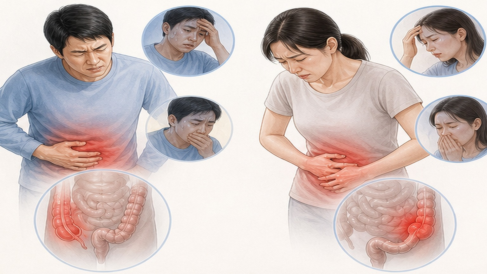
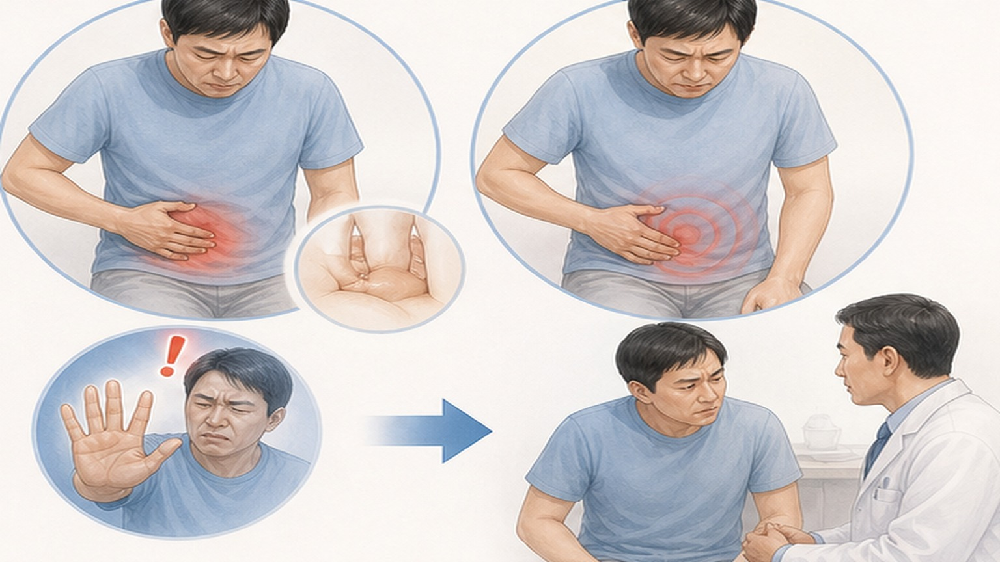
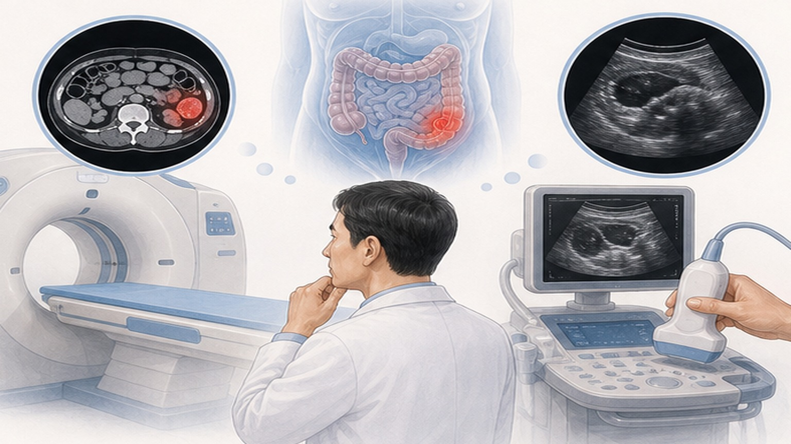

맹장염과 급성 게실염,
응급 대응 가이드
급성충수염 (Acute Appendicitis) 과 급성 게실염 (Acute Diverticulitis) 의 임상 감별과 위험 신호
갑작스러운 복통, 무엇을 의심해야 할까요
맹장염과 게실염은 시간 싸움 — 조기 발견이 합병증을 막습니다
갑작스러운 복통이 몇 시간 이상 지속되면 단순한 체기가 아니라 외과적 응급일 수 있습니다.
급성충수염과 급성 게실염은 모두 시간이 지나면 천공·복막염으로 진행할 수 있는 외과적 응급 질환입니다. 두 질환은 통증 부위와 호발 연령이 다르지만, 자가진단만으로는 구분이 어렵고 영상 검사(CT 또는 초음파)와 진찰이 필요합니다. 위험 신호를 알면 응급실로 갈 시점을 정확히 판단할 수 있습니다.
급성충수염 (Acute Appendicitis) 이란
가장 흔한 외과적 응급 질환 — 충수돌기의 폐쇄·세균 증식으로 발생합니다
맹장 끝에 달린 충수돌기 (Appendix) 가 막히고 염증이 생겨 부풀어 오르는 질환입니다.
대변 덩어리·림프조직 증식 등으로 충수돌기 입구가 막히면 내부 점액이 고이며 세균이 증식해 염증이 시작됩니다. 처음에는 배꼽 주변이 막연히 아프다가, 4~12시간 사이에 통증이 우하복부 (RLQ) 로 이동하는 것이 전형적인 양상입니다. 24시간 이상 방치하면 충수가 터져 복막염으로 진행할 수 있어 조기 진단이 핵심입니다.
급성 게실염 (Acute Diverticulitis) 이란
대장 벽이 약해진 부위가 주머니처럼 튀어나와 염증이 생기는 질환입니다
대장 벽이 약해진 곳에 생긴 게실 (Diverticulum) 에 변 찌꺼기가 끼어 염증을 일으킨 상태입니다.
게실 자체는 무증상으로 평생 모르고 지내는 경우가 많지만, 게실 입구가 막히고 세균이 증식하면 급성 염증이 생깁니다. 서양인은 좌측 (S상결장) 게실염이 흔하고, 한국인은 우측 (맹장 부근) 게실염이 더 흔해 충수염과 헷갈리기 쉽습니다. 천공·농양·누공·협착 등 합병증으로 진행할 수 있어 정확한 영상 진단이 필요합니다.

맹장염 vs 급성 게실염 비교
증상이 비슷해 보이지만 통증 부위·호발 연령이 다릅니다
- 통증 부위 — 오른쪽 아랫배 (RLQ)
- 배꼽 주변에서 시작해 우하복부로 이동
- 발병 연령 — 10~30대 청장년 호발
- 주요 증상 — 식욕 부진·오심·이동성 통증
- 치료 원칙 — 수술적 절제 (충수절제술) 표준
- 지연되면 복막염·패혈증 위험
- 통증 부위 — 좌측 (서양) 또는 우측 (한국)
- 한국인은 우측이 흔해 충수염과 감별 필요
- 발병 연령 — 중장년 이상 호발
- 주요 증상 — 국소 압통·발열·변비/설사
- 치료 원칙 — 생장식·항생제 (외래/입원)
- 합병성이면 배농·수술 고려
집에서 의심해 볼 수 있는 6가지 신호
아래 양상이 한두 가지라도 해당되면 진료를 미루지 마세요

반발통 자가 점검 3단계
통증 부위를 확인하는 간단한 자가 점검 — 단, 진단은 의료진의 진찰이 필요합니다

진단 검사 — 복부 CT의 정확도
실제 임상에서 가장 표준적인 검사는 복부 CT — 초음파보다 모든 지표에서 우수합니다
실제 환자를 발견할 확률
비환자를 정확히 배제할 확률
(Diagnostic accuracy)
CT와 초음파, 어떻게 선택할까요
각 검사의 장단점 — 환자 상황 (연령·임신·증상 정도) 에 따라 선택합니다

의원 외래 진료 vs 응급실, 어디로 가야 할까요
통증 시작 시간·동반 증상에 따라 의료기관 선택이 달라집니다
- 복통이 시작된 지 12~24시간 이내 경과
- 경미한 복통 (메스꺼움·미열 없거나 약함)
- 걸을 수 있을 정도의 압통
- 약간의 식욕 저하 정도
- 가능 검사 — 진찰·혈액 검사·복부 초음파
- 외래 결과에 따라 입원/수술 결정
- 복통 6~12시간 경과 + 심한 통증
- 38℃ 이상 고열·오한 동반
- 누워있을 때보다 움직일 때 더 아픔
- 오른쪽 아랫배 국소 압통이 심함
- 가능 검사 — 응급 CT·혈액 검사 즉시 가능
- 응급 수술 (당일 결과 판정) 가능
이럴 때는 즉시 119, 6시간 안에 응급실
복막염·천공의 위험 신호 — 한 가지라도 해당되면 지체 없이 응급실로
복통이 시작된 시간을 기억하면
진단에 큰 도움이 됩니다
갑작스러운 복통은 시간 싸움 — 위험 신호를 알면 더 빨리 결정할 수 있습니다
광교중앙로 298, 4층
토요일 08:30~13:30
같은 자료를 다시 볼 수 있어요